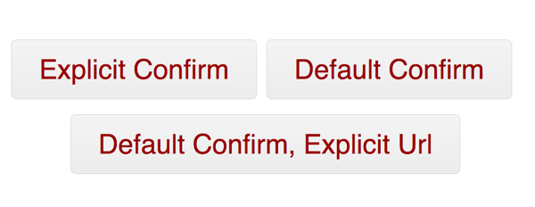
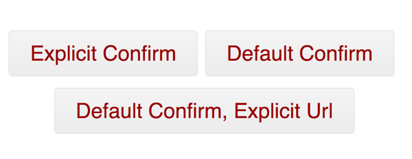

Super simple test-case?
Confirm that you'd like to be taken to an off-site URL after clicking a link/button.

Confirm that you'd like to be taken to an off-site URL after clicking a link/button.

HTML5 is simple; it works right now...let's use it:
<!DOCTYPE html>
<html lang="en">
<head>
<meta charset="utf-8">
<title>How to develop a jQuery plugin with CoffeeScript</title>
<body>
</body>
</html>full file @ https://gist.github.com/1308594#file_index.html
Github button styles and our custom look & feel.
<!DOCTYPE html>
<html lang="en">
<head>
<meta charset="utf-8">
<title>How to develop a jQuery plugin with CoffeeScript</title>
<link rel="stylesheet" href="gh-buttons.css">
<link rel="stylesheet" href="main.css">
<body>
</body>
</html>Github Button CSS @ https://gist.github.com/1308594#file_gh_buttons.css
or
Github Button CSS @ https://github.com/necolas/css3-github-buttons
Make our buttons line up correctly:
body {
margin: 250px 0px;
padding: 0px; text-align:center; }
.button {
margin: 15px 0; }
full file @ https://gist.github.com/1308594#file_main.css
Buttons to event on:
...
<body>
<a href="http://example.com"
class="button huge danger"
data-external="true"
data-confirm="Are you sure you want to leave us?">
Explicit Confirm
</a>
<!-- two more buttons like this below, slight variations -->
<!-- full file @: https://gist.github.com/1308594#file_index.html -->
</body>
</html>full file @ https://gist.github.com/1308594#file_index.html
jQuery + our simple plugin (jquery.externalurl):
<body>
...
<script src="http://code.jquery.com/jquery-1.6.4.min.js"></script>
<script src="jquery.externalurl.js"></script>
<script>
$(document).ready(function() {
// create new instance of plugin
var plugin = new $.externalurl();
});
</script>
</body>
</html>full file @ https://gist.github.com/1308594#file_index.html
Our plugin is driven by HTML5 "data-" (data-dash) attributes similar to: Rails3 UJS support
<a href="http://example.com" class="button huge danger" data-external="true" data-confirm="Are you sure you want to leave us?" rel="nofollow">Explicit Confirm</a>Uses "data-external" to invoke functionality and "data-confirm" to (optionally) customize the confirmation message text
Instead of this:
onClick="var ask = confirm('...'); return false;This is nicer:
$('[data-external]').data('confirm'); // try me in the script console :)(($) ->
$.externalurl = (el, options) ->
defaults =
messageStay: "Thanks for sticking with us!"
messageConfirm: "Are you sure you want to leave us?"
externalurl = @
externalurl.settings = {}
init = ->
init()
) jQuery
Continuously compile with $ coffee -wc jquery.externalurl.coffee
(function($) {
return $.externalurl = function(el, options) {
var defaults, externalurl, init;
defaults = {
messageStay: "Thanks for sticking with us!",
messageConfirm: "Are you sure you want to leave us?"
};
externalurl = this;
externalurl.settings = {};
init = function() {};
return init();
};
})(jQuery);
init = ->
externalurl.settings = $.extend({}, defaults, options)
externalurl.el = el
externalurl.selector = "[data-external]"
$(this).delegate externalurl.selector, "click", (e) ->
e.preventDefault()
url = $(this).data("url") or @href
ask = $(this).data("confirm") or externalurl.settings.messageConfirm
return false unless url
if confirm(ask)
window.location.href = url
else
alert externalurl.settings.messageStay
init = function() {
externalurl.settings = $.extend({}, defaults, options);
externalurl.el = el;
externalurl.selector = "[data-external]";
return $(this).delegate(externalurl.selector, "click", function(e) {
var ask, url;
e.preventDefault();
url = $(this).data("url") || this.href;
ask = $(this).data("confirm") || externalurl.settings.messageConfirm;
if (!url) { return false; }
if (confirm(ask)) {
return window.location.href = url;
} else {
return alert(externalurl.settings.messageStay);
}
});
};
Slides and code @ Github: https://github.com/wilmoore/presentation-html5denver-jqueryplugindev-coffeescript.
Code only via Github gist @ https://gist.github.com/1308594.
/
#